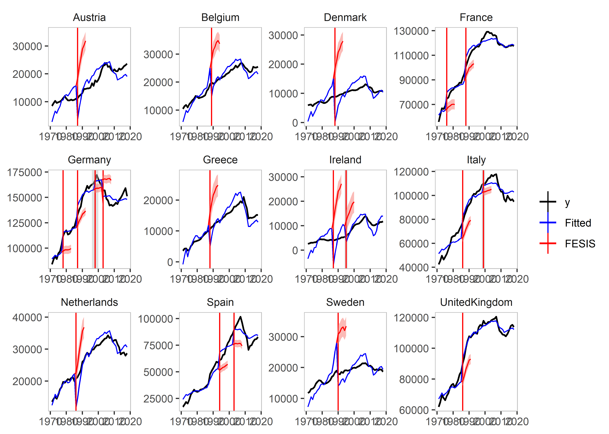
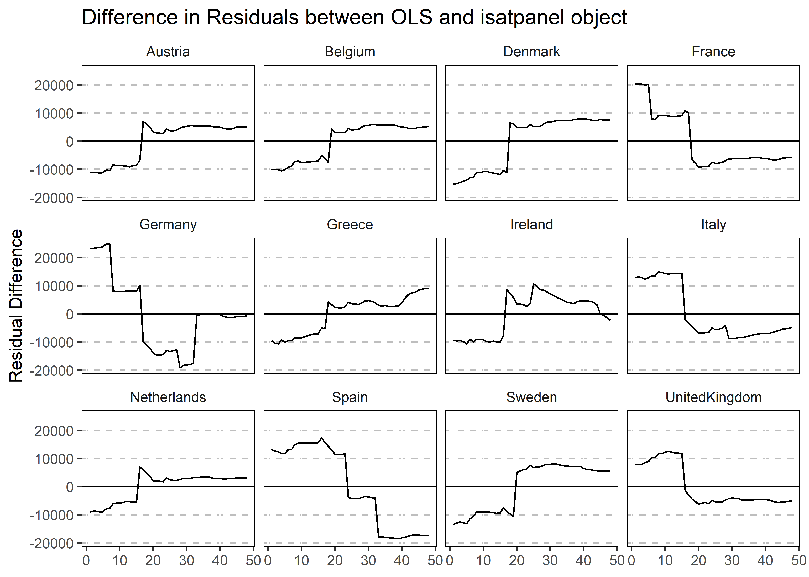

The package is a panel adaptation of the gets package see see here.
This code is being developed by Felix Pretis and Moritz Schwarz. The associated working paper is published under “Panel Break Detection: Detecting Unknown Treatment, Stability, Heterogeneity, and Outliers” by Pretis and Schwarz, which is available at SSRN here.
Installation
You can install the released version of getspanel from CRAN with:
install.packages("getspanel")And the development version from GitHub with:
# install.packages("devtools")
devtools::install_github("moritzpschwarz/getspanel")Example
library(getspanel)
data("EU_emissions_road")
subset_EU15 <- c("Austria", "Belgium", "Germany", "Denmark", "Spain", "Finland",
"France", "Greece", "Ireland", "Italy", "Luxembourg", "Netherlands","Portugal", "Sweden", "United Kingdom")
EU_emissions_road <- EU_emissions_road[EU_emissions_road$country %in% subset_EU15, ]
is1 <- isatpanel(data = EU_emissions_road,
formula = transport.emissions ~ lgdp + lpop,
index = c("country","year"),
effect = "twoways",
fesis = TRUE,
print.searchinfo = FALSE # to save space we suppress the status information in the estimation
)is1
Date: Tue Oct 11 22:22:54 2022
Dependent var.: y
Method: Ordinary Least Squares (OLS)
Variance-Covariance: Ordinary
No. of observations (mean eq.): 720
Sample: 1 to 720
SPECIFIC mean equation:
coef std.error t-stat p-value
lgdp -8544.9 2319.1 -3.6845 0.0002486 ***
lpop 3805.8 7072.2 0.5381 0.5906719
idBelgium 4274.3 2043.0 2.0922 0.0368149 *
idDenmark -2664.8 3066.9 -0.8689 0.3852402
idFinland -6504.6 2855.6 -2.2779 0.0230635 *
idFrance 76891.2 11146.3 6.8983 1.267e-11 ***
idGermany 95573.1 13389.2 7.1381 2.576e-12 ***
idGreece -6335.6 2358.2 -2.6866 0.0074053 **
idIreland -17559.0 4251.5 -4.1301 4.108e-05 ***
idItaly 51941.9 11492.0 4.5198 7.373e-06 ***
idLuxembourg -19579.9 17644.9 -1.1097 0.2675620
idNetherlands 9878.4 3654.9 2.7028 0.0070586 **
idPortugal -13847.2 2926.9 -4.7309 2.752e-06 ***
idSpain 26281.4 9483.6 2.7712 0.0057464 **
idSweden 5772.1 1467.4 3.9336 9.281e-05 ***
idUnitedKingdom 71674.8 11502.5 6.2312 8.394e-10 ***
time1971 164694.5 78288.9 2.1037 0.0357963 *
time1972 166697.1 78291.3 2.1292 0.0336196 *
time1973 168798.7 78286.3 2.1562 0.0314421 *
time1974 168090.5 78311.0 2.1464 0.0322126 *
time1975 169229.5 78359.2 2.1597 0.0311694 *
time1976 171162.4 78370.9 2.1840 0.0293242 *
time1977 172672.3 78381.7 2.2030 0.0279527 *
time1978 173404.0 78408.0 2.2116 0.0273496 *
time1979 174686.2 78411.1 2.2278 0.0262390 *
time1980 175036.3 78425.6 2.2319 0.0259685 *
time1981 173981.1 78456.6 2.2175 0.0269363 *
time1982 174638.0 78465.5 2.2257 0.0263841 *
time1983 174009.8 78486.7 2.2171 0.0269696 *
time1984 175197.8 78482.9 2.2323 0.0259400 *
time1985 175966.5 78477.5 2.2423 0.0252866 *
time1986 178003.6 78471.4 2.2684 0.0236378 *
time1987 177602.8 78455.3 2.2637 0.0239238 *
time1988 179349.0 78449.9 2.2862 0.0225708 *
time1989 181676.6 78457.7 2.3156 0.0208954 *
time1990 184188.7 78469.4 2.3473 0.0192153 *
time1991 186004.6 78501.0 2.3695 0.0181100 *
time1992 187439.1 78528.6 2.3869 0.0172809 *
time1993 186694.7 78559.7 2.3765 0.0177724 *
time1994 187225.9 78566.4 2.3830 0.0174618 *
time1995 187945.6 78571.2 2.3920 0.0170425 *
time1996 189158.1 78579.2 2.4072 0.0163562 *
time1997 190048.3 78577.3 2.4186 0.0158577 *
time1998 191989.8 78575.8 2.4434 0.0148199 *
time1999 193511.7 78574.7 2.4628 0.0140489 *
time2000 194083.9 78574.7 2.4701 0.0137688 *
time2001 193751.0 78575.7 2.4658 0.0139324 *
time2002 194470.6 78599.6 2.4742 0.0136120 *
time2003 195708.3 78653.1 2.4882 0.0130907 *
time2004 196762.8 78672.1 2.5010 0.0126314 *
time2005 196528.2 78698.4 2.4972 0.0127668 *
time2006 197151.9 78718.2 2.5045 0.0125091 *
time2007 197502.9 78741.6 2.5082 0.0123797 *
time2008 195755.6 78785.9 2.4847 0.0132223 *
time2009 193794.3 78850.7 2.4577 0.0142456 *
time2010 193455.7 78869.7 2.4529 0.0144386 *
time2011 192842.4 78888.6 2.4445 0.0147745 *
time2012 190772.0 78922.4 2.4172 0.0159186 *
time2013 190987.4 78949.3 2.4191 0.0158361 *
time2014 191602.8 78967.6 2.4263 0.0155269 *
time2015 192490.6 78979.5 2.4372 0.0150719 *
time2016 193349.8 79000.3 2.4475 0.0146546 *
time2017 193936.6 79016.4 2.4544 0.0143778 *
time2018 193549.0 79030.9 2.4490 0.0145913 *
fesisAustria.1987 -5813.0 1429.7 -4.0658 5.382e-05 ***
fesisBelgium.1989 -5272.4 1400.4 -3.7650 0.0001819 ***
fesisGermany.1978 20291.0 2180.3 9.3067 < 2.2e-16 ***
fesisGermany.1987 29019.1 1860.1 15.6008 < 2.2e-16 ***
fesisGermany.2003 -12626.6 1565.9 -8.0634 3.658e-15 ***
fesisDenmark.1988 -11190.2 1436.9 -7.7878 2.756e-14 ***
fesisSpain.1993 20950.9 1822.2 11.4978 < 2.2e-16 ***
fesisSpain.2001 16109.9 1841.2 8.7498 < 2.2e-16 ***
fesisFinland.1991 -10796.4 1346.2 -8.0200 5.045e-15 ***
fesisFrance.1988 25862.9 1454.3 17.7840 < 2.2e-16 ***
fesisUnitedKingdom.1987 23772.3 1429.0 16.6354 < 2.2e-16 ***
fesisGreece.1987 -6852.9 1590.3 -4.3090 1.898e-05 ***
fesisItaly.1981 12187.4 3320.0 3.6709 0.0002618 ***
fesisItaly.1983 20029.1 3169.2 6.3199 4.906e-10 ***
fesisLuxembourg.1987 -7330.2 1503.7 -4.8749 1.375e-06 ***
fesisSweden.1990 -10435.0 1394.6 -7.4826 2.416e-13 ***
---
Signif. codes: 0 '***' 0.001 '**' 0.01 '*' 0.05 '.' 0.1 ' ' 1
Diagnostics and fit:
Chi-sq df p-value
Ljung-Box AR(1) 387.15 1 < 2.2e-16 ***
Ljung-Box ARCH(1) 332.36 1 < 2.2e-16 ***
---
Signif. codes: 0 '***' 0.001 '**' 0.01 '*' 0.05 '.' 0.1 ' ' 1
SE of regression 4131.66485
R-squared 0.99245
Log-lik.(n=720) -6976.66946
plot(is1)
Let’s explore the other plots that we can use:
plot_grid(is1)We can plot the counterfactual aspects compared
plot_counterfactual(is1)
We can plot the residuals against an OLS model:
plot_residuals(is1)
An example using coefficient step indicator saturation and impulse indicator saturation:
is2 <- isatpanel(data = EU_emissions_road,
formula = transport.emissions ~ lgdp + lpop,
index = c("country","year"),
effect = "twoways",
csis = TRUE,
iis = TRUE,
print.searchinfo = FALSE # to save space we suppress the status information in the estimation
)is2
Date: Tue Oct 11 22:26:05 2022
Dependent var.: y
Method: Ordinary Least Squares (OLS)
Variance-Covariance: Ordinary
No. of observations (mean eq.): 720
Sample: 1 to 720
SPECIFIC mean equation:
coef std.error t-stat p-value
lgdp -13562.7 4211.3 -3.2205 0.0013437 **
lpop 11530.0 12595.1 0.9154 0.3603039
idBelgium 4072.8 3200.4 1.2726 0.2036224
idDenmark -3500.7 5098.6 -0.6866 0.4925816
idFinland -7890.2 4676.3 -1.6872 0.0920373 .
idFrance 91966.1 20019.1 4.5939 5.230e-06 ***
idGermany 130080.3 22833.4 5.6969 1.853e-08 ***
idGreece -10071.6 4527.6 -2.2245 0.0264582 *
idIreland -12507.6 7160.2 -1.7468 0.0811409 .
idItaly 74371.0 19872.7 3.7424 0.0001985 ***
idLuxembourg -9431.8 30453.4 -0.3097 0.7568786
idNetherlands 12538.2 6499.9 1.9290 0.0541714 .
idPortugal -14265.2 5105.2 -2.7943 0.0053560 **
idSpain 40175.7 17091.9 2.3506 0.0190442 *
idSweden 3831.8 2021.2 1.8957 0.0584389 .
idUnitedKingdom 85369.9 20139.9 4.2389 2.574e-05 ***
time1971 165717.1 136771.0 1.2116 0.2260930
time1972 167722.7 136772.0 1.2263 0.2205344
time1973 170003.0 136760.4 1.2431 0.2142916
time1974 2412928.9 742685.7 3.2489 0.0012184 **
time1975 2419489.5 744568.7 3.2495 0.0012159 **
time1976 2428993.2 746965.9 3.2518 0.0012063 **
time1977 142336.5 137478.0 1.0353 0.3008967
time1978 143226.9 137533.6 1.0414 0.2980809
time1979 144588.8 137539.0 1.0513 0.2935332
time1980 146898.5 137498.2 1.0684 0.2857536
time1981 149430.1 137450.7 1.0872 0.2773732
time1982 150067.2 137467.4 1.0917 0.2753904
time1983 150128.9 137493.0 1.0919 0.2752826
time1984 148838.1 137568.4 1.0819 0.2796908
time1985 149614.7 137560.7 1.0876 0.2771650
time1986 151551.6 137555.8 1.1017 0.2709815
time1987 157289.0 137423.9 1.1446 0.2528175
time1988 160112.5 137399.5 1.1653 0.2443246
time1989 162186.8 137387.0 1.1805 0.2382312
time1990 160971.7 137500.1 1.1707 0.2421496
time1991 161227.8 137567.2 1.1720 0.2416314
time1992 162533.1 137619.9 1.1810 0.2380253
time1993 163225.4 137672.3 1.1856 0.2362122
time1994 163970.5 137678.7 1.1910 0.2341039
time1995 164736.3 137687.6 1.1965 0.2319592
time1996 167245.3 137659.0 1.2149 0.2248378
time1997 170150.5 137593.2 1.2366 0.2166770
time1998 172113.2 137592.3 1.2509 0.2114258
time1999 174212.2 137574.7 1.2663 0.2058581
time2000 176516.9 137525.3 1.2835 0.1997682
time2001 177200.6 137559.8 1.2882 0.1981466
time2002 177616.7 137611.0 1.2907 0.1972633
time2003 173799.6 137793.6 1.2613 0.2076541
time2004 174930.0 137825.9 1.2692 0.2048226
time2005 174700.2 137872.6 1.2671 0.2055707
time2006 182331.5 137695.0 1.3242 0.1859144
time2007 182116.7 137661.8 1.3229 0.1863265
time2008 182267.4 137779.5 1.3229 0.1863385
time2009 176480.4 137993.7 1.2789 0.2013900
time2010 173932.3 138094.7 1.2595 0.2082986
time2011 173181.3 138132.4 1.2537 0.2103913
time2012 171369.9 138181.9 1.2402 0.2153596
time2013 172026.0 138214.6 1.2446 0.2137187
time2014 172638.2 138247.4 1.2488 0.2122036
time2015 173699.6 138264.4 1.2563 0.2094660
time2016 174927.4 138290.4 1.2649 0.2063526
time2017 175512.6 138319.7 1.2689 0.2049362
time2018 175075.2 138347.7 1.2655 0.2061575
iis97 -40328.7 9481.1 -4.2536 2.415e-05 ***
iis98 -36997.2 9481.5 -3.9020 0.0001054 ***
iis99 -35707.6 9481.1 -3.7662 0.0001809 ***
iis100 -33422.5 9570.2 -3.4923 0.0005114 ***
iis101 -30662.7 9491.1 -3.2307 0.0012976 **
iis102 -27504.6 9582.2 -2.8704 0.0042338 **
iis229 34325.4 9434.9 3.6381 0.0002965 ***
lpop.csis1974 -139568.0 45644.0 -3.0577 0.0023221 **
lpop.csis1977 141257.3 45642.4 3.0949 0.0020539 **
---
Signif. codes: 0 '***' 0.001 '**' 0.01 '*' 0.05 '.' 0.1 ' ' 1
Diagnostics and fit:
Chi-sq df p-value
Ljung-Box AR(1) 585.38 1 < 2.2e-16 ***
Ljung-Box ARCH(1) 411.09 1 < 2.2e-16 ***
---
Signif. codes: 0 '***' 0.001 '**' 0.01 '*' 0.05 '.' 0.1 ' ' 1
SE of regression 9005.99607
R-squared 0.96374
Log-lik.(n=720) -7541.20077
plot(is2)
plot_grid(is2)and an example of Coefficient Fixed-Effect Step indicator saturation:
is3 <- isatpanel(data = EU_emissions_road,
formula = transport.emissions ~ lgdp + lpop,
index = c("country","year"),
effect = "twoways",
cfesis = TRUE,
print.searchinfo = FALSE # to save space we suppress the status information in the estimation
)
is3
plot(is3)
We can also use e.g. the fixest package to estimate our models:
is4 <- isatpanel(data = EU_emissions_road,
formula = transport.emissions ~ lgdp + lpop,
index = c("country","year"),
effect = "twoways",
engine = "fixest",
fesis = TRUE,
print.searchinfo = FALSE # to save space we suppress the status information in the estimation
)
plot(is4)